Custom PCB • Embedded Systems • Modular Hardware
HomePad
Modular Smart Home Automation System
A modular hardware platform for configurable smart home interaction, featuring custom PCBs, embedded firmware, I²C communication, expandable peripheral modules, and a web-based configuration interface.
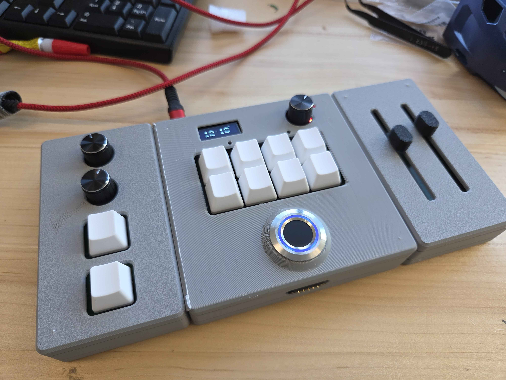
Project Snapshot
2025 – 2026
PCB Design • Embedded Integration
PCB Assembly • Hardware Validation
UC Davis Electrical & Computer Engineering
Problem → Goal → Solution
Designing a tactile alternative to app-only smart home control.
Many smart home systems rely heavily on phone apps or touchscreen interfaces. While flexible, these interfaces can feel less intuitive for users who prefer physical controls, tactile feedback, and quick access to repeated actions.
The goal of HomePad was to create a modular desktop controller that lets users configure physical controls such as buttons, knobs, sliders, and displays while keeping the hardware expandable and reliable.
HomePad combines custom PCB modules, modular mechanical design, embedded communication, and web-based configuration into a single physical interface for smart home interaction.
Engineering Highlights
Key technical pieces of the system.
Custom PCB Design
Designed and assembled controller and peripheral boards for the modular HomePad system.
Modular Expansion
Built a system where input modules such as buttons, knobs, and sliders can be rearranged.
I²C Communication
Used I²C to support communication between the main controller and peripheral modules.
Hardware Bring-Up
Validated boards through assembly, wiring checks, debugging, and prototype testing.
Development Timeline
From early prototypes to an award-winning final device.
Concept & Architecture
Defined the modular controller concept and planned how the main board would communicate with peripheral modules.
Breadboard Bring-Up
Validated early wiring, display behavior, input controls, and communication before committing to PCB fabrication.
CC3200 Digital Clock Prototype
Developed an early digital clock prototype using the TI CC3200 LaunchPad to test external device control.
PCB Design & Assembly
Created schematic captures, PCB layouts, assembled boards, and validated the hardware after fabrication.
Final Prototype & Showcase
Integrated the modules into a polished HomePad prototype and presented the system during senior design.
Engineering Gallery
Design, PCB development, bring-up, and final hardware.
{kind=link}
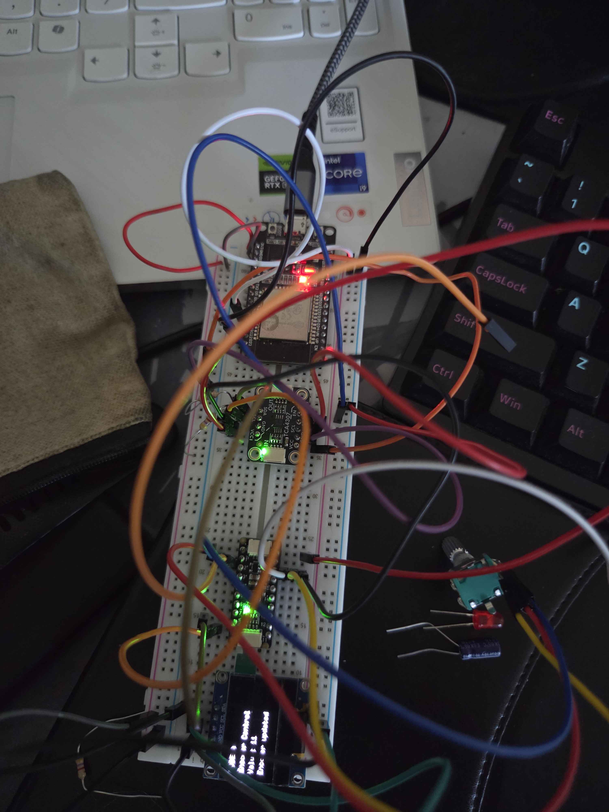
{kind=link}
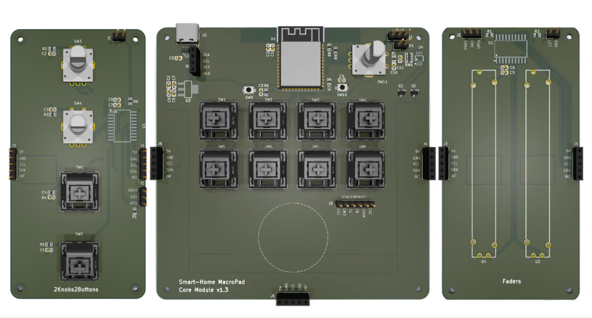
{kind=link}
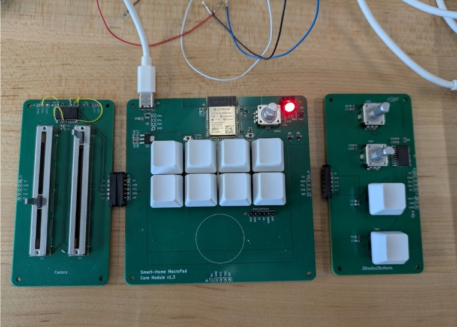
{kind=link}
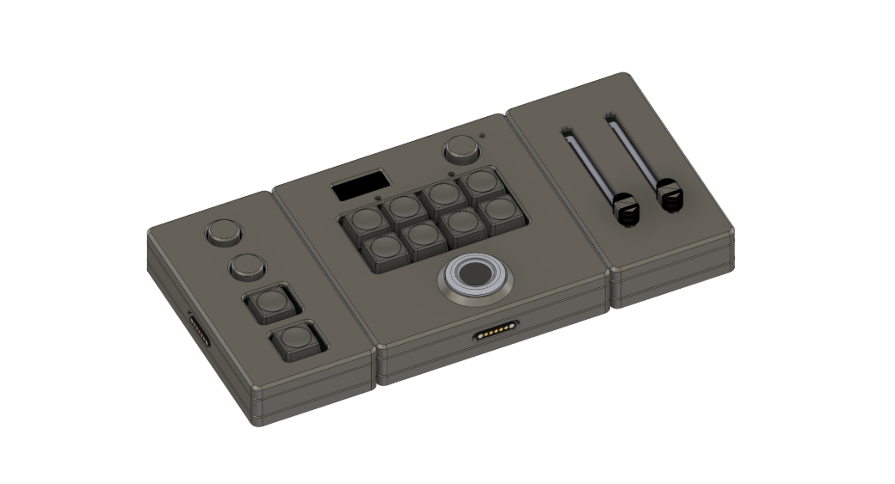
{kind=link}
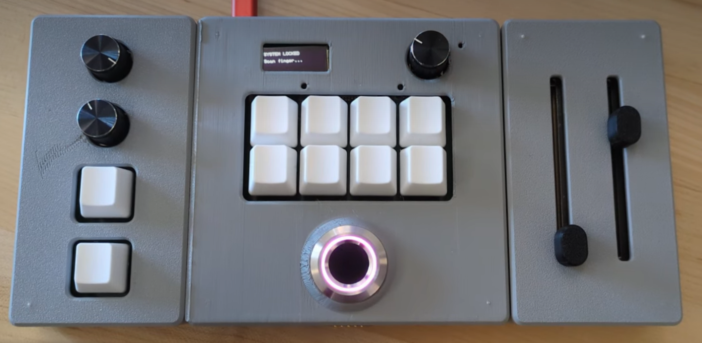
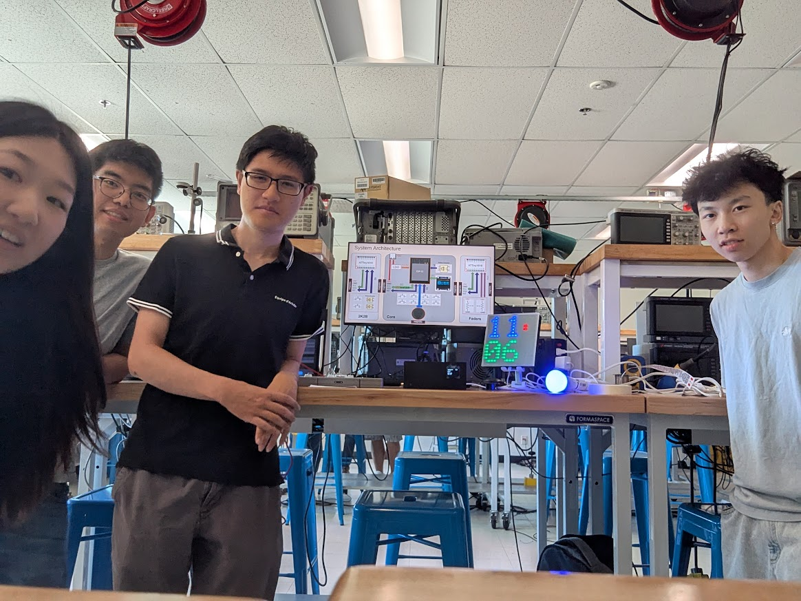
A short walkthrough demonstrating the completed HomePad system, including the modular hardware, configurable controls, and overall user interaction.
Prototype Evolution
Testing external device control before the final display module.
One prototype I worked on was a digital clock device built using the TI CC3200 LaunchPad. This allowed us to test how HomePad could control an external embedded device through a physical interface.
In the final direction, the clock prototype was replaced by a 16×16 RGB LED matrix module with its own ESP32. The ESP32 module can support Wi-Fi time synchronization and WLED-based control, making it more flexible than the original clock prototype.
{kind=link}
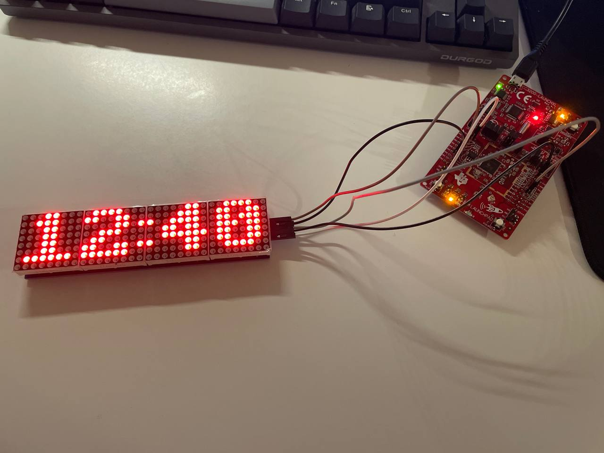
{kind=link}
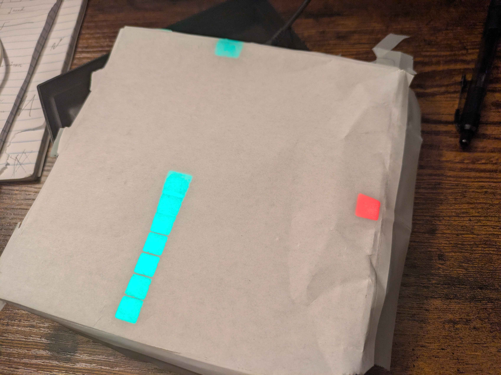
Showcase & Recognition
Presented at UC Davis and recognized for senior design excellence.
{kind=link}
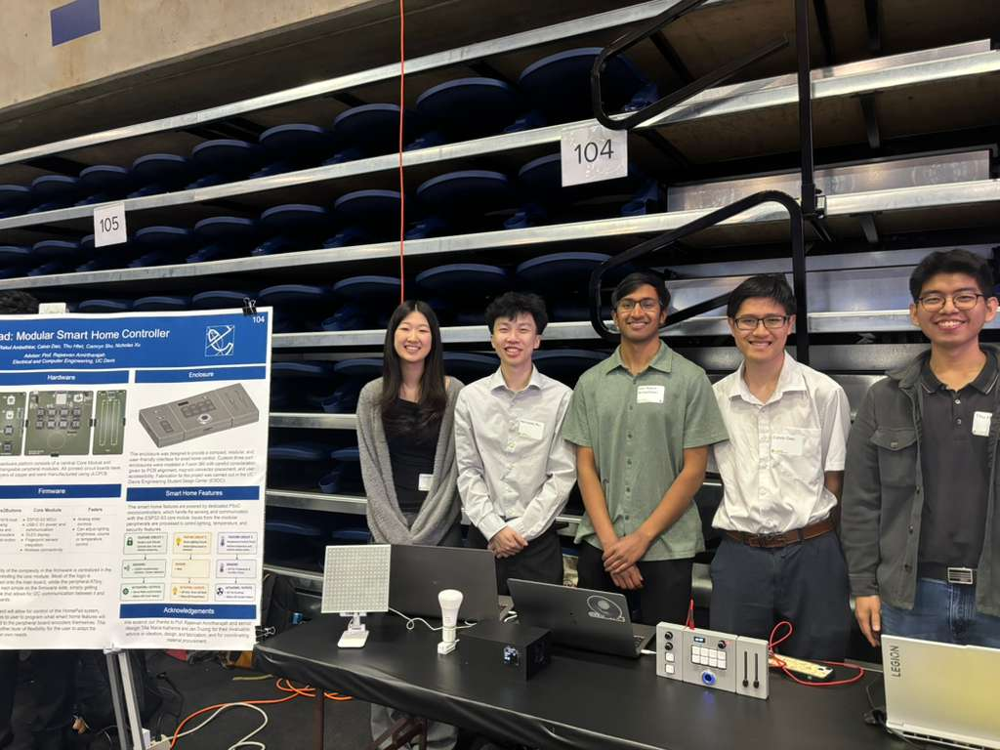
{kind=link}
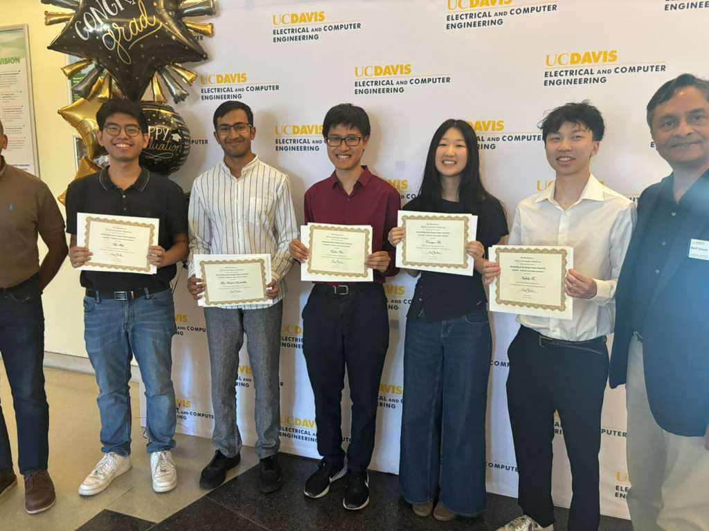
Lessons Learned
What this project taught me as an engineer.
This project strengthened my understanding of how hardware design, mechanical constraints, embedded communication, and user interaction come together in a real embedded system.
I gained practical experience with PCB design tradeoffs, board bring-up, hardware debugging, modular system design, and communicating engineering decisions during a public technical showcase.
Project Team
Developed collaboratively by a multidisciplinary senior design team.
Thu Htet
PCB Design • PCB Assembly • System Architecture • Hardware Validation
Hari Rakul Ambethkar
PCB Design • PCB Assembly • System Architecture • Hardware Validation • Embedded Firmware
Calvin Dao
Web Application • Embedded Firmware • Hardware Validation
Nicholas Xu
• Embedded Firmware • Hardware Validation • Smart Home Prototype
Camryn Shu
Mechanical Design • 3D Modeling • CAD Assembly